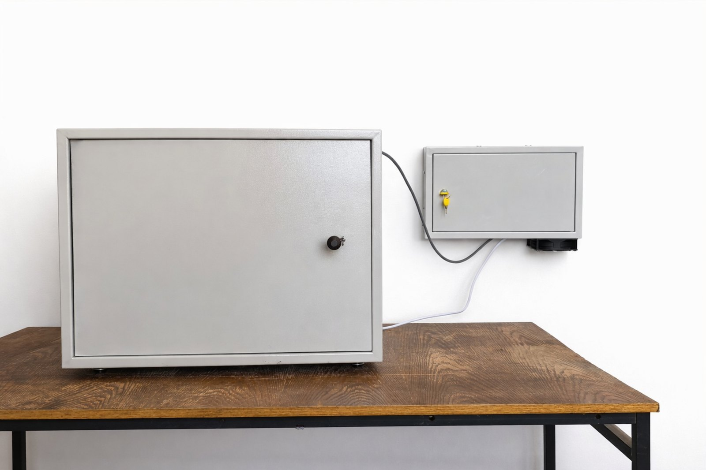
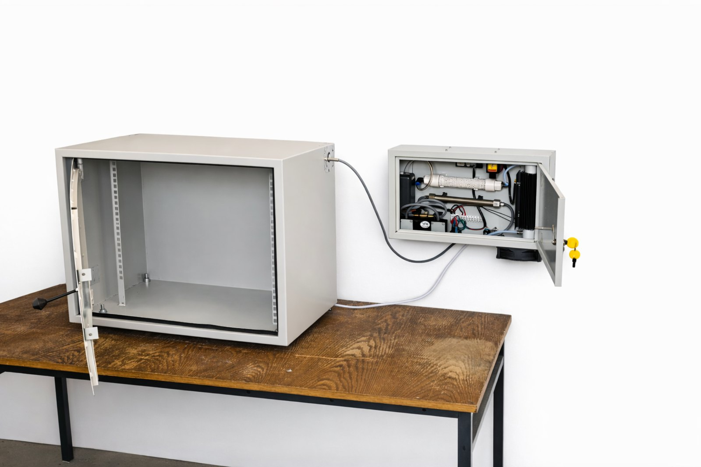
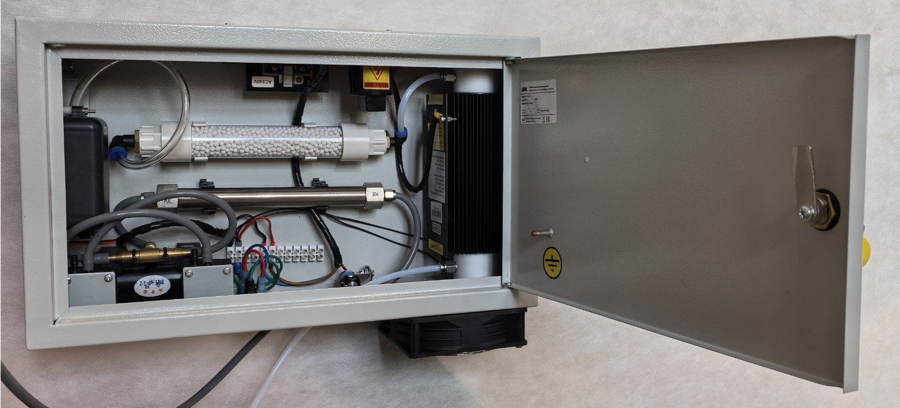
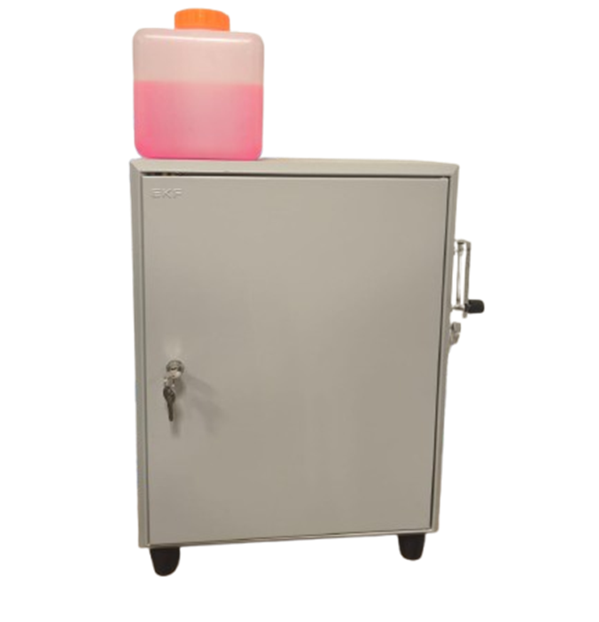

Технические характеристики (типовые)
- Тип стерилизации: озонирование + низкотемпературная плазма (модуль).
- Температурный режим: 20–60°C.
- Габариты: линейка моделей (компактные / средние / крупногабаритные / проходные).
Разрабатываем, производим и обслуживаем камеры стерилизации с использованием озонирования и низкотемпературной неравновесной плазмы. Без жидких химических реагентов, с контролем параметров процесса.
Важно: решения предполагают соблюдение регламентов по охране труда и промышленной безопасности при работе с озоном.
Камеры стерилизации для обеззараживания поверхностей и изделий методом озонирования (с опциональным модулем низкотемпературной плазмы) — с автоматизированным управлением и контролем параметров.
В основе — генерация озона и плазменные режимы (барьерный/поверхностный разряд) с управляемыми параметрами, ориентированные на воспроизводимость циклов обработки.
Ниже приведены изображения прототипа камеры стерилизации и узлов системы. Материалы предназначены для демонстрации компоновки и текущего уровня готовности изделия.




Процент инактивации бактерий Bacillus subtilis в зависимости от концентрации озона и времени экспозиции.
| № | Концентрация озона | Время экспозиции | Кол-во бактерий до обработки (ОМЧ) | Кол-во бактерий после обработки (ОМЧ) | Кратность | Процент инактивации бактерий |
|---|---|---|---|---|---|---|
| мг/м³ | мин | КОЕ/г | КОЕ/г ×10⁵ | о.е. | % | |
| 1 | 285 | 1,0 | 3,56 × 10⁵ B.s на 3/4 чашки |
1,43 | 2,49 | 60 |
| 2 | 1,5 | 1,61 | 2,27 | 55 | ||
| 3 | 3,0 | 0,63 | 5,65 | 82 | ||
| 4 | 3,0 | 0,51 | 6,98 | 86 | ||
| 5 | 570 | 0,5 | 0,51 | 6,98 | 86 | |
| 6 | 1,0 | 0,49 | 7,27 | 85 | ||
| 7 | 1,5 | 0,37 | 9,62 | 90 | ||
| 8 | 3,0 | 0,27 | 13,19 | 92 |
Примечание: исходная нагрузка до обработки одинакова для серий измерений (3,56 × 10⁵; B.s на 3/4 чашки).
Разработка камеры по ТЗ, подбор режимов, компоновка узлов, подготовка КД.
Поставка, монтаж, пусконаладка, инструктаж и обучение персонала, регламенты эксплуатации.
ТО, ремонт, модернизация, поставка расходных материалов и запасных частей, удалённая диагностика (опция).
Реквизиты приведены для информационных целей и могут дополняться/уточняться при подготовке договорных документов.
Стартап ориентирован на разработку, производство и обслуживание камер стерилизации с применением озонирования как эффективного метода уничтожения бактерий, вирусов и грибков без использования химических реагентов.
Тематическое направление (лот): Н5 «Биотехнологии».
Поддержка проекта. Проект реализуется при поддержке гранта Фонда содействия инновациям, предоставленного в рамках программы «Студенческий стартап» федерального проекта «Платформа университетского технологического предпринимательства». Фонд содействия инновациям · Федеральный проект